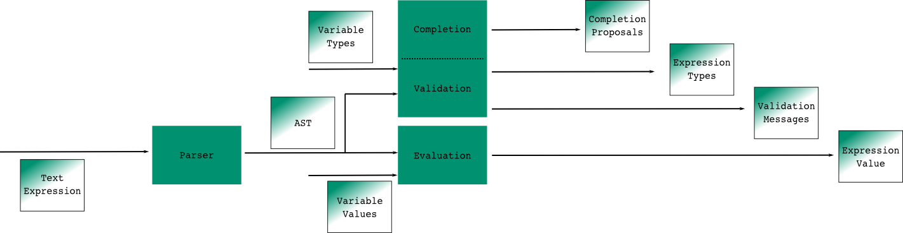

Acceleo Query Language
Query and navigate in EMF models
Overview
The Acceleo Query Language (AQL) is a language used to navigate and query an EMF model. In this document, you will find the description of all the services of the standard library of AQL.
Introduction
The Acceleo Query Language (AQL) is a language used to navigate and query an EMF model. In this document, you will find the description of the syntax, all the services and the standard library of AQL.
AQL as a query engine is small, simple, fast, extensible and it brings a richer validation than the MTL interpreter.
For those looking for a simple and fast interpreters for your EMF models, AQL can provide you with a lot of features, including:
- Support for static and dynamic Ecore models, no query compilation phase required.
- The least possible overhead at evaluation time. During this phase, the evaluation goes forward and will not even try to validate or compile your expressions. Errors are tracked and captured along the way.
- Strong validation: types are checked at validation time and the metamodels used are analyzed to do some basic type inference and avoid false positive errors.
- Union types: In some context, a variable in a given query can have N potential types with N being often greater than one. AQL can embrace this fact without having to fall back to EObject as soon as there is more than one type.
- A simple and straightforward implementation easily extensible with Java classes providing extension methods.
- A very narrow dependency surface: AQL uses the very central parts of EMF, Guava and Antlr so that we could easily deploy AQL outside of Eclipse in a server or a standalone scenario.
The AQL interpreter is used in Sirius with the prefix «aql:».
Syntax
Basics
The syntax is very similar to the OCL syntax. An expression always starts with a variable
aVariable
The variable named
self represent the current object (think of it as the
this in Java).
Let’s consider the following metamodel :

From a variable one can access field or reference values using the
. separator.
With
self being an instance of
Person,
self.name returns the value of the attribute
name and
self.father return the father of the person.
If the attribute or the reference is multi-valued, then
self.parents will return a collection.
Calls can be chained, as such
self.parents.name will return a collection containing the names of the parents.
If one want to access the collection itself, then the separator
-> must be used, as such
self.parents.name->size() will return the number of elements in the collection whereas
self.parents.name.size() will return a collection containing
the sizes of each name.
AQL can also call methods modeled as EOperations or defined through Java services. The syntax denoting such a call is
. for instance
self.someCall() will call the
someCall method and return the result.
Working with collections
Filtering a collection is generaly done using either
->filter(..) to keep elements of a given type or
->select(..) to keep elements which are validating a given condition.
With
self being an instance of
Family,
self.members->filter(family::Man) will return all the members of the family which are mens and
self.members->select( p | p.name.startsWith('A')) will return all the members of the family which have a name starting by the letter ‹A›.
To access an element at a particular index you can use the operation
->at(..);
self.members->at(1) will return the first person which is a member of the family (in that specific case it is probably better to use
self.members->first()
AQL has two kinds of collections, a
Sequence which is a list, or an
OrderedSet which does not allow doubles. You can convert a
Sequence to an
OrderedSet by as such :
self.members->asSet()
You can also define a collection by extension using the following syntax:
-
OrderedSet{self}which returns a set containing the current EObject. -
Sequence{self, self.eContainer()}returns a sequence containing the current EObject and its parent.
Navigation axes
AQL provides operations out of the box to browse the model. Most notably :
-
self.eContainer()returns the parent of the current object if there is one. -
self.eAllContents(some::Type)returns all direct and indirect children matching the given type. -
self.eContents()return all the direct children. -
self.eInverse('father')returns the cross reference of the reference named ‹father›. In this case it will return all the persons which have the current object (self) as a father.
Conditions
AQL provides an If but it has to be an expression and not a statement. As such one has to define the else. Here is the syntax
if
self.name.startsWith('a')
then
self
else
self.eContainer()
endif
Walkthrough using an UML example
Let’s move to a slightly more complex example to learn how to navigate through a model. We will work with a model instance from the following metamodel: a simplified view of the UML2 metamodel with Package, UseCase, Model or Component instances.

The following illustration demonstrate the result of the just typing
self as a query. At the bottom every instance of the UML model is represented by a node with containment relationships from top to bottom and displaying the non-contained references in between those nodes through horizontal edges. The result of the query is highlighted in
blue.

The variable
self here is the
Class named «Invoice» in the model, as such the query
self hightlight this instance.
eContainer()

When using the query
self.eContainer() the cursor move from the
self variable to its most direct parent, here the
Component instance named «Accounting».

Such calls can be chained and as such
self.eContainer().eContainer() return the
Component parents: the
Package named «Components».

The
eContainer() call can also be used with a type parameter, in that case it will be transitively executed up to the point where an instance of the given type is found.
In this case then
self.eContainer(uml::Model) goes up to the root of the graph. If no instance of the given type is found in the parents then the query returns an empty result.

eContainer() or any other service using types as parameters will match both the given types or its subtypes. The only exception to this rule is the
oclIsTypeOf(..) service which is intended to check only for the given type and not its subtypes.
When using the query
self.eContainer(uml::Class) the result is an instance of
Component as the
Component type extends
Class in the metamodel.

A variant of
eContainer(..) named
eContainerOrSelf(..) is provided it will first check the type of the current instance. As such the query
self.eContainerOrSelf(uml::Class) when
self is the «Invoice» class returns this instance.
eContents()

One use
eContainer() to go up in the parent. The
eContents() axes is its counterpart and returns the direct children of the element.
select()

The
select(...) service can be used to filter elements from a list by veryfing a predicate. In the query
self.eContents()->select(p | p.name = 'id') the query only returns the elements which have a name equal to
"id", in this case a single element.

Equality is checked with a single
=, inequality is expressed with the operator
<>.

Comparing values with an enumeration is slightly different as the enumeration value should be explicitely qualified. In the
self.eContents()->select(p | p.visibility = uml::VisibilityKind::private ) query the expression
uml::VisibilityKind::private denotes the enumeration literal named
private which is contained in the
VisibilityKind enumeration of the
uml metamodel.
eAllContents()

The
eAllContents() axe is used to browse direct and indirect children. It goes from the starting point to the leafs of the model. Here the expression starts with
self.eContainer(uml::Model) which has we’ve seen before goes up until an instance of
Model is found. From here
eAllContents is executed returning all the direct and indirect childrens of the «Travel Agency»
model instance.

Just like any other collection it can be filtered to retrieve, for instace, the elements whose name is starting by the letter «I».

A type parameter can be used to retrieve the direct or indirect children of a specific type: here components.

Or use case instances.

It is interesting to note that the parameter can also be a collection of types, enabling the retrieval of many elements through a single pass.
eInverse()
Queries using
eAllContents must be designed with care as they tend to lead to an intense browsing of the model. In many cases they can be replaced with
eInverse() calls to retrieve elements of interests.

eInverse() returns any element which as a relationship with the current one. This relationship can be indifferently a containment one or not.

It is often of interest to restrict the type of elements we expect out of the
eInverse() call. With the query
self.eContainer().eInverse(uml::UseCase) only use cases instances will be returned, here the
UseCase named «to Invoice» which refers to the «Accounting»
Component through the reference named
subject

One can also be even more explicit and query for a specific reference name, here
packagedElement : only the
Package named «Components» refers to the «Accounting»
Component through the reference named «packagedElement».
Language Reference
These sections are listing all the services of the standard library of AQL.
Services available for all types
Object + String : String
Returns the concatenation of self (as a String) and the given string "s".
| Expression | Result |
|---|---|
| 42 + ' times' | '42 times' |
String + Object : String
Returns the concatenation of the current string and the given object "any" (as a String).
| Expression | Result |
|---|---|
| 'times ' + 42 | 'times 42' |
Object <> Object : Boolean
Indicates whether the object "o1" is a different object from the object "o2".
| Expression | Result |
|---|---|
| 'Hello' <> 'World' | true |
| 'Hello' <> 'Hello' | false |
Object = Object : Boolean
Indicates whether the object "o1" is the same as the object "o2". For more information refer to the Object#equals(Object) method.
| Expression | Result |
|---|---|
| 'Hello' = 'World' | false |
| 'Hello' = 'Hello' | true |
Object.oclAsType(Object) : Object
Casts the current object to the given type.
| Expression | Result |
|---|---|
| anEPackage.oclAsType(ecore::EPackage) | anEPackage |
| anEPackage.oclAsType(ecore::EClass) | anEPackage |
| null.oclAsType(ecore::EPackage) | null |
| anEPackage.oclAsType(ecore::EClass) | throws an exception |
| anything.oclAsType(null) | throws an exception |
If the given object is null then no check is performed, otherwise the oclIsKindOf check is performed.
In other languages
| Language | Expression | Result |
|---|---|---|
| Acceleo 3 (MTL) | anEPackage.oclAsType(ecore::EPackage) | anEPackage |
| Acceleo 3 (MTL) | anEPackage.oclAsType(ecore::EClass) | oclInvalid |
Object.oclIsKindOf(Object) : Boolean
Evaluates to "true" if the type of the object o1 conforms to the type "classifier". That is, o1 is of type "classifier" or a subtype of "classifier".
| Expression | Result |
|---|---|
| anEPackage.oclIsKindOf(ecore::EPackage) | true |
| anEPackage.oclIsKindOf(ecore::ENamedElement) | true |
Object.oclIsTypeOf(Object) : Boolean
Evaluates to "true" if the object o1 if of the type "classifier" but not a subtype of the "classifier".
| Expression | Result |
|---|---|
| anEPackage.oclIsTypeOf(ecore::EPackage) | true |
| anEPackage.oclIsTypeOf(ecore::ENamedElement) | false |
Object.toString() : String
Returns a string representation of the current object.
| Expression | Result |
|---|---|
| 42.toString() | '42' |
Object.trace() : String
Returns a string representation of the current environment.
| Expression | Result |
|---|---|
| 42.trace() | 'Metamodels: http://www.eclipse.org/emf/2002/Ecore Services: org.eclipse.acceleo.query.services.AnyServices public java.lang.String org.eclipse.acceleo.query.services.AnyServices.add(java.lang.Object,java.lang.String) ... receiver: 42 ' |
Services available for Booleans
Boolean.and(Boolean) : Boolean
Logical and.
| Expression | Result |
|---|---|
| true and false | false |
| false and true | false |
| true and true | true |
| false and false | false |
Boolean.implies(Boolean) : Boolean
Logical implies.
| Expression | Result |
|---|---|
| true implies true | true |
| true implies false | false |
| false implies true | true |
| false implies false | true |
Boolean.not() : Boolean
Logical negation.
| Expression | Result |
|---|---|
| not true | false |
| not false | true |
Boolean.or(Boolean) : Boolean
Logical or.
| Expression | Result |
|---|---|
| true or false | true |
| false or true | true |
| true or true | true |
| false or false | false |
Boolean.xor(Boolean) : Boolean
Logical xor.
| Expression | Result |
|---|---|
| true xor true | false |
| true xor false | true |
| false xor true | true |
| false xor false | false |
Services available for Collections
Sequence + Collection : Sequence
Returns the concatenation of the given collection into the given sequence.
| Expression | Result |
|---|---|
| Sequence{'a', 'b', 'c'}.add(Sequence{'d', 'e'}) | Sequence{'a', 'b', 'c', 'd', 'e'} |
| Sequence{'a', 'b', 'c'} + OrderedSet{'c', 'e'} | Sequence{'a', 'b', 'c', 'c', 'e'} |
The service addAll has been replaced by "add" in order to have access to the operator "+" between to sequences
In other languages
| Language | Expression | Result |
|---|---|---|
| Acceleo 3 (MTL) | Sequence{'a', 'b', 'c'} + Sequence{'d', 'e'} | Sequence{'a', 'b', 'c', 'd', 'e'} |
| Acceleo 3 (MTL) | Sequence{'a', 'b', 'c'}.addAll(OrderedSet{'c', 'e'}) | Sequence{'a', 'b', 'c', 'c', 'e'} |
OrderedSet + Collection : OrderedSet
Returns the concatenation of the given collection into the current set.
| Expression | Result |
|---|---|
| OrderedSet{'a', 'b', 'c'} + OrderedSet{'c', 'b', 'f'} | OrderedSet{'a', 'b', 'c', 'f'} |
The service addAll has been replaced by "add" in order to have access to the operator "+" between to sets
In other languages
| Language | Expression | Result |
|---|---|---|
| Acceleo 3 (MTL) | OrderedSet{'a', 'b', 'c'}.addAll(OrderedSet{'c', 'b', 'f'}) | OrderedSet{'a', 'b', 'c', 'f'} |
Collection->any( x | ... ) : Object
Gets the first element in the current collection for which the value returned by the lambda evaluates to "true".
| Expression | Result |
|---|---|
| Sequence{'a', 'b', 'c'}->any(str | str.size() = 1) | 'a' |
Sequence->append(Object) : Sequence
Inserts the given object in a copy of the given sequence at the last position.
| Expression | Result |
|---|---|
| Sequence{'a', 'b', 'c'}->append('f') | Sequence{'a', 'b', 'c', 'f'} |
OrderedSet->append(Object) : OrderedSet
Inserts the given object in a copy of the given set at the last position. If the set already contained the given object, it is moved to the last position.
| Expression | Result |
|---|---|
| OrderedSet{'a', 'b', 'c'}->append('f') | OrderedSet{'a', 'b', 'c', 'f'} |
| OrderedSet{'a', 'b', 'c'}->append('b') | OrderedSet{'a', 'c', 'b'} |
Collection->asOrderedSet() : OrderedSet
Returns a set representation of the specified collection. Returns the same object if it is a set already. This operation has the same behavior as "asSet()"
| Expression | Result |
|---|---|
| OrderedSet{'a', 'b', 'c'}->asOrderedSet() | OrderedSet{'a', 'b', 'c'} |
| Sequence{'a', 'b', 'c'}->asOrderedSet() | OrderedSet{'a', 'b', 'c'} |
Collection->asSequence() : Sequence
Returns a sequence representation of the specified collection. Returns the same object if it is already a sequence.
| Expression | Result |
|---|---|
| OrderedSet{'a', 'b', 'c'}->asSequence() | Sequence{'a', 'b', 'c'} |
| Sequence{'a', 'b', 'c'}->asSequence() | Sequence{'a', 'b', 'c'} |
Collection->asSet() : OrderedSet
Returns a set representation of the specified collection. Returns the same object if it is already a set.
| Expression | Result |
|---|---|
| OrderedSet{'a', 'b', 'c'}->asSet() | OrderedSet{'a', 'b', 'c'} |
| Sequence{'a', 'b', 'c', 'c', 'a'}->asSet() | OrderedSet{'a', 'b', 'c'} |
Sequence->at(Integer) : Object
Returns the element at the specified position in the sequence.
| Expression | Result |
|---|---|
| Sequence{'a', 'b', 'c'}->at(1) | 'a' |
| Sequence{'a', 'b', 'c'}->at(2) | 'b' |
OrderedSet->at(Integer) : Object
Returns the element at the specified position in the set.
| Expression | Result |
|---|---|
| OrderedSet{'a', 'b', 'c'}->at(1) | 'a' |
| OrderedSet{'a', 'b', 'c'}->at(2) | 'b' |
Collection->closure( x | ... ) : OrderedSet{Object}
Returns a set containing the result of applying "lambda" recursivly.
| Expression | Result |
|---|---|
| Sequence{eCls}->closure(e | e.eContainer()) | Sequence{subEPkg, ePkg, rootEPkg} |
Sequence->collect( x | ... ) : Sequence{Object}
Returns a sequence containing the result of applying "lambda" on all elements contained in the current sequence, maintaining order.
| Expression | Result |
|---|---|
| Sequence{'a', 'b', 'c'}->collect(str | str.toUpper()) | Sequence{'A', 'B', 'C'} |
OrderedSet->collect( x | ... ) : OrderedSet{Object}
Returns a set containing the result of applying "lambda" on all elements contained in the current set, maintaining order.
| Expression | Result |
|---|---|
| OrderedSet{'a', 'b', 'c'}->collect(str | str.toUpper()) | OrderedSet{'A', 'B', 'C'} |
Sequence->concat(Collection) : Sequence
Returns the concatenation of the current sequence with the given collection.
| Expression | Result |
|---|---|
| Sequence{'a', 'b', 'c'}.concat(Sequence{'d', 'e'}) | Sequence{'a', 'b', 'c', 'd', 'e'} |
In other languages
| Language | Expression | Result |
|---|---|---|
| Acceleo 3 (MTL) | Sequence{'a', 'b', 'c'}.addAll(Sequence{'d', 'e'}) | Sequence{'a', 'b', 'c', 'd', 'e'} |
OrderedSet->concat(Collection) : OrderedSet
Returns the concatenation of the current set with the given collection.
| Expression | Result |
|---|---|
| OrderedSet{'a', 'b', 'c'}.concat(Sequence{'d', 'e'}) | OrderedSet{'a', 'b', 'c', 'd', 'e'} |
In other languages
| Language | Expression | Result |
|---|---|---|
| Acceleo 3 (MTL) | OrderedSet{'a', 'b', 'c'}.addAll(Sequence{'d', 'e'}) | OrderedSet{'a', 'b', 'c', 'd', 'e'} |
Sequence{Object}->count(Object) : Integer
Counts the number of occurrences of the given object in the given sequence
| Expression | Result |
|---|---|
| Sequence{'a', 'b', 'c'}->count('d') | 0 |
| Sequence{'a', 'b', 'c'}->count('a') | 1 |
OrderedSet->count(Object) : Integer
Returns "1" if the current set contains the given object, "0" otherwise.
| Expression | Result |
|---|---|
| OrderedSet{'a', 'b', 'c'}->count('d') | 0 |
| OrderedSet{'a', 'b', 'c'}->count('a') | 1 |
Sequence->dropRight(Integer) : Sequence
Returns a sequence of elements before the given index in the given sequence
| Expression | Result |
|---|---|
| Sequence{'a', 'b', 'c'}->dropRight(2) | Sequence{'a'} |
OrderedSet->dropRight(Integer) : OrderedSet
Returns a set of elements before the given index in the given set
| Expression | Result |
|---|---|
| OrderedSet{'a', 'b', 'c'}->dropRight(2) | OrderedSet{'a'} |
Sequence->drop(Integer) : Sequence
Returns a sequence of elements after the given index in the given sequence
| Expression | Result |
|---|---|
| Sequence{'a', 'b', 'c'}->drop(2) | Sequence{'c'} |
OrderedSet->drop(Integer) : OrderedSet
Returns a set of elements after the given index in the given set
| Expression | Result |
|---|---|
| OrderedSet{'a', 'b', 'c'}->drop(2) | OrderedSet{'c'} |
Collection->endsWith(Collection) : Boolean
Returns "true" if the sequence ends with other, "false" otherwise
| Expression | Result |
|---|---|
| Sequence{'a', 'b', 'c'}->endsWith(Sequence{'b', 'c'}) | true |
Collection->excludesAll(Collection) : Boolean
Indicates if no elements from the second collection are contained in the first collection
| Expression | Result |
|---|---|
| Sequence{'a', 'b'}->excludesAll(OrderedSet{'f'}) | true |
| Sequence{'a', 'b'}->excludesAll(OrderedSet{'a', 'f'}) | false |
Collection->excludes(Object) : Boolean
Indicates if the given collection doesn't contain the given object.
| Expression | Result |
|---|---|
| Sequence{'a', 'b', 'c'}->excludes('a') | false |
| Sequence{'a', 'b', 'c'}->excludes('d') | true |
Sequence->excluding(Object) : Sequence
Removes the given object from the current sequence.
| Expression | Result |
|---|---|
| Sequence{'a', 'b', 'c'}->excluding('c') | Sequence{'a', 'b'} |
OrderedSet->excluding(Object) : OrderedSet
Removes the given object from the current set.
| Expression | Result |
|---|---|
| OrderedSet{'a', 'b', 'c'}->excluding('c') | OrderedSet{'a', 'b'} |
Collection->exists( x | ... ) : Boolean
Indicates if it exists an object from the given collection for which the given lambda evaluates to "true"
| Expression | Result |
|---|---|
| Sequence{'a', 'b', 'c'}->exists(str | str.size() > 5) | false |
Sequence->filter(Class) : Sequence
Keeps only instances of the given primitive type (String, Integer, Real, Boolean) from the given sequence.
| Expression | Result |
|---|---|
| Sequence{'a', 1, 3.14}->filter(String) | Sequence{'a'} |
Sequence->filter(EClassifier) : Sequence
Keeps only instances of the given EClassifier in the given sequence.
| Expression | Result |
|---|---|
| Sequence{anEClass, anEAttribute, anEReference}->filter(ecore::EClass) | Sequence{anEClass} |
| Sequence{anEClass, anEAttribute}->filter(ecore::EStructuralFeature) | Sequence{anEAttribute} |
Sequence->filter(OrderedSet{EClassifier}) : Sequence
Keeps only instances of the given EClassifier in the given sequence.
| Expression | Result |
|---|---|
| Sequence{anEClass, anEAttribute, anEReference}->filter({ecore::EClass | ecore::EReference}) | Sequence{anEClass, anEReference} |
| Sequence{anEClass, anEAttribute, anEPackage}->filter({ecore::EStructuralFeature | ecore::EPacakge}) | Sequence{anEAttribute, anEPackage} |
OrderedSet->filter(Class) : OrderedSet
Keeps only instances of the given primitive type (String, Integer, Real, Boolean) from the given set.
| Expression | Result |
|---|---|
| OrderedSet{'a', 1, 3.14}->filter(String) | OrederedSet{'a'} |
OrderedSet->filter(EClassifier) : OrderedSet
Keeps only instances of the given EClassifier from the given set.
| Expression | Result |
|---|---|
| OrderedSet{anEClass, anEAttribute, anEReference}->filter(ecore::EClass) | OrederedSet{anEClass} |
| OrderedSet{anEClass, anEAttribute}->filter(ecore::EStructuralFeature) | OrederedSet{anEAttribute} |
OrderedSet->filter(OrderedSet{EClassifier}) : OrderedSet
Keeps only instances of the given set of EClassifier from the given set.
| Expression | Result |
|---|---|
| OrderedSet{anEClass, anEAttribute, anEReference}->filter({ecore::EClass | ecore::EReference}) | OrderedSet{anEClass, anEReference} |
| OrderedSet{anEClass, anEAttribute, anEPackage}->filter({ecore::EStructuralFeature | ecore::EPacakge}) | OrderedSet{anEAttribute, anEPackage} |
Collection->first() : Object
Returns the first element of the specified Collection.
| Expression | Result |
|---|---|
| Sequence{'a', 'b', 'c'}->first() | 'a' |
Collection->forAll( x | ... ) : Boolean
Indicates if all the objects from the given collection validate the given lamba
| Expression | Result |
|---|---|
| Sequence{'a', 'b', 'ccc'}->forAll(str | str.size() = 1) | false |
| Sequence{'a', 'b', 'c'}->forAll(str | str.size() = 1) | false |
Collection->includesAll(Collection) : Boolean
Indicates if all elements from the second collection are contained in the first collection
| Expression | Result |
|---|---|
| Sequence{'a', 'b', 'c'}->includesAll(OrderedSet{'a'}) | true |
| Sequence{'a', 'b', 'c'}->includesAll(OrderedSet{'a', 'f'}) | false |
Collection->includes(Object) : Boolean
Indicates if the given collection contains the given object.
| Expression | Result |
|---|---|
| Sequence{'a', 'b', 'c'}->includes('a') | true |
| Sequence{'a', 'b', 'c'}->includes('d') | false |
Sequence->including(Object) : Sequence
Adds the given object to the current sequence.
| Expression | Result |
|---|---|
| Sequence{'a', 'b', 'c'}->including('d') | Sequence{'a', 'b', 'c', 'd'} |
OrderedSet->including(Object) : OrderedSet
Adds the given object to the current set.
| Expression | Result |
|---|---|
| OrderedSet{'a', 'b', 'c'}->including('d') | OrderedSet{'a', 'b', 'c', 'd'} |
Collection->indexOfSlice(Collection) : Integer
Returns the index of the other collection in the given collection
| Expression | Result |
|---|---|
| Sequence{'a', 'b', 'c'}->indexOfSlice(Sequence{'b', 'c'}) | 2 |
Sequence->indexOf(Object) : Integer
Returns the index of the given object in the given sequence ([1..size]).
| Expression | Result |
|---|---|
| Sequence{1, 2, 3, 4}->indexOf(3) | 3 |
OrderedSet->indexOf(Object) : Integer
Returns the index of the given object in the given set ([1..size]).
| Expression | Result |
|---|---|
| OrderedSet{1, 2, 3, 4}->indexOf(3) | 3 |
Sequence->insertAt(Integer, Object) : Sequence
Inserts the given object in a copy of the given sequence at the given position ([1..size]).
| Expression | Result |
|---|---|
| Sequence{'a', 'b', 'c'}->insertAt(2, 'f') | Sequence{'a', 'f', 'b', 'c'} |
OrderedSet->insertAt(Integer, Object) : OrderedSet
Inserts the given object in a copy of the given set at the given position ([1..size]). If the given set already contains this object, it will be moved to the accurate position.
| Expression | Result |
|---|---|
| OrderedSet{'a', 'b', 'c'}->insertAt(2, 'f') | Sequence{'a', 'f', 'b', 'c'} |
Sequence->intersection(Collection) : Sequence
Creates a sequence with elements from the given sequence that are present in both the current sequence and the given other {@code Collection}. Iteration order will match that of the current sequence. Duplicates from the first list will all be kept in the result if they also are in the second one, but duplicates from the second list will be dumped even if they are present in the first.
| Expression | Result |
|---|---|
| Sequence{'a', 'b', 'c'}->intersection(OrderedSet{'a', 'f'}) | Sequence{'a'} |
OrderedSet->intersection(Collection) : OrderedSet
Creates a set with the elements from the given set that are also present in the given collection.
| Expression | Result |
|---|---|
| OrderedSet{'a', 'b', 'c'}->intersection(OrderedSet{'a', 'f'}) | OrderedSet{'a'} |
Collection->isEmpty() : Boolean
Returns "true" when the input collection is empty.
| Expression | Result |
|---|---|
| OrderedSet{'a', 'b', 'c'}->isEmpty() | false |
| Sequence{}->isEmpty() | true |
Collection->isUnique( x | ... ) : Boolean
Indicates if the evaluation of the given lambda gives a different value for all elements of the given collection.
| Expression | Result |
|---|---|
| Sequence{'a', 'b', 'c'}->isUnique(str | str.size()) | false |
| Sequence{'a', 'bb', 'ccc'}->isUnique(str | str.size()) | true |
Collection->lastIndexOfSlice(Collection) : Integer
Returns the last index of the other collection in the given collection
| Expression | Result |
|---|---|
| Sequence{'a', 'b', 'c', 'a', 'b', 'c'}->lastIndexOfSlice(Sequence{'b', 'c'}) | 5 |
Sequence->lastIndexOf(Object) : Integer
Returns the last index of the given object in the given sequence ([1..size]).
| Expression | Result |
|---|---|
| Sequence{1, 2, 3, 4, 3}->lastIndexOf(3) | 5 |
OrderedSet->lastIndexOf(Object) : Integer
Returns the last index of the given object in the given set ([1..size]).
| Expression | Result |
|---|---|
| OrderedSet{1, 2, 3, 4}->lastIndexOf(3) | 3 |
Sequence->last() : Object
Returns the last element of the given sequence.
| Expression | Result |
|---|---|
| Sequence{'a', 'b', 'c'}->last() | 'c' |
OrderedSet->last() : Object
Returns the last element of the given set.
| Expression | Result |
|---|---|
| OrderedSet{'a', 'b', 'c'}->last() | 'c' |
Collection->max() : Number
Max element of the given collection if possible.
| Expression | Result |
|---|---|
| Sequence{1, 2, 3, 4}->max() | 4 |
| Sequence{1, 2, 3.14, 4}->max() | 4 |
Collection->min() : Number
Min element of the given collection if possible.
| Expression | Result |
|---|---|
| Sequence{1, 2, 3, 4}->min() | 1 |
| Sequence{1, 2, 3.14, 4}->min() | 1.0 |
Collection->notEmpty() : Boolean
Returns "true" when the input collection is not empty.
| Expression | Result |
|---|---|
| OrderedSet{'a', 'b', 'c'}->notEmpty() | true |
| Sequence{}->notEmpty() | false |
Collection->one( x | ... ) : Boolean
Indicates if one and only one element of the given collection validates the given lambda.
| Expression | Result |
|---|---|
| Sequence{'a', 'b', 'c'}->one(str | str.equals('a')) | true |
| Sequence{'a', 'a', 'c'}->one(str | str.equals('a')) | false |
Sequence->prepend(Object) : Sequence
Inserts the given object in a copy of the given sequence at the first position.
| Expression | Result |
|---|---|
| Sequence{'a', 'b', 'c'}->prepend('f') | Sequence{'f', 'a', 'b', 'c'} |
OrderedSet->prepend(Object) : OrderedSet
Inserts the given object in a copy of the given set at the first position. If the set already contained the given object, it is moved to the first position.
| Expression | Result |
|---|---|
| OrderedSet{'a', 'b', 'c'}->prepend('f') | OrderedSet{'f', 'a', 'b', 'c'} |
Sequence->reject( x | ... ) : Sequence
Reject returns a filtered version of the specified sequence. Only elements for which the given "lambda" evaluates to false will be present in the returned sequence
| Expression | Result |
|---|---|
| Sequence{'a', 'b', 'c'}->reject(str | str.equals('a')) | Sequence{'b', 'c'} |
OrderedSet->reject( x | ... ) : OrderedSet
Reject returns a filtered version of the specified set. Only elements for which the given "lambda" evaluates to false will be present in the returned set
| Expression | Result |
|---|---|
| OrderedSet{'a', 'b', 'c'}->reject(str | str.equals('a')) | OrderedSet{'b', 'c'} |
Sequence->reverse() : Sequence
Returns the given sequence in reversed order.
| Expression | Result |
|---|---|
| Sequence{'a', 'b', 'c'}->reverse() | Sequence{'c', 'b', 'a'} |
OrderedSet->reverse() : OrderedSet
Returns the given set in reversed order.
| Expression | Result |
|---|---|
| OrderedSet{'a', 'b', 'c'}->reverse() | OrderedSet{'c', 'b', 'a'} |
Sequence->select( x | ... ) : Sequence
Select returns a filtered version of the specified sequence. Only elements for which the given "lambda" evaluates to true will be present in the returned sequence.
| Expression | Result |
|---|---|
| Sequence{'a', 'b', 'c'}->select(str | str.equals('a')) | Sequence{'a'} |
OrderedSet->select( x | ... ) : OrderedSet
Select returns a filtered version of the specified set. Only elements for which the given "lambda" evaluates to true will be present in the returned set.
| Expression | Result |
|---|---|
| OrderedSet{'a', 'b', 'c'}->select(str | str.equals('a')) | OrderedSet{'a'} |
Collection->sep(Object) : Sequence{Object}
Inserts the given separator between each elements of the given collection.
| Expression | Result |
|---|---|
| Sequence{'a', 'b', 'c'}->sep('-') | Sequence{'a', '-', 'b', '-', 'c'} |
| OrderedSet{'a', 'b', 'c'}->sep('-') | Sequence{'a', '-', 'b', '-', 'c'} |
Collection->sep(Object, Object, Object) : Sequence{Object}
Inserts the given separator between each elements of the given collection, the given prefix before the first element, and the given suffix after the last element.
| Expression | Result |
|---|---|
| Sequence{'a', 'b', 'c'}->sep('[', '-', ']') | Sequence{'[', 'a', '-', 'b', '-', 'c', ']'} |
| Sequence{}->sep('[', '-', ']') | Sequence{'[', ']'} |
Collection->sep(Object, Object, Object, boolean) : Sequence{Object}
Inserts the given separator between each elements of the given collection, the given prefix before the first element, and the given suffix after the last element.
| Expression | Result |
|---|---|
| Sequence{'a', 'b', 'c'}->sep('[', '-', ']', true) | Sequence{'[', 'a', '-', 'b', '-', 'c', ']'} |
| Sequence{}->sep('[', '-', ']', true) | Sequence{'[', ']'} |
| Sequence{}->sep('[', '-', ']', false) | Sequence{} |
Collection->size() : Integer
Returns the size of the specified collection
| Expression | Result |
|---|---|
| Sequence{'a', 'b', 'c'}->size() | 3 |
| OrderedSet{'a', 'b', 'c', 'd'}->size() | 4 |
Sequence->sortedBy( x | ... ) : Sequence
Returns a sequence containing the elements of the original sequence ordered by the result of the given lamba
| Expression | Result |
|---|---|
| Sequence{'aa', 'bbb', 'c'}->sortedBy(str | str.size()) | Sequence{'c', 'aa', 'bbb'} |
OrderedSet->sortedBy( x | ... ) : OrderedSet
Returns a set containing the elements of the original set ordered by the result of the given lamba
| Expression | Result |
|---|---|
| OrderedSet{'aa', 'bbb', 'c'}->sortedBy(str | str.size()) | OrderedSet{'c', 'aa', 'bbb'} |
Collection->startsWith(Collection) : Boolean
Returns "true" if the sequence starts with other, "false" otherwise
| Expression | Result |
|---|---|
| Sequence{'a', 'b', 'c'}->startsWith(Sequence{'a', 'b'}) | true |
OrderedSet->subOrderedSet(Integer, Integer) : OrderedSet
Returns a subset of the given set
| Expression | Result |
|---|---|
| OrderedSet{'a', 'b', 'c'}->subOrderedSet(1, 2) | OrderedSet{'a', 'b'} |
Sequence->subSequence(Integer, Integer) : Sequence
Returns a subset of the given sequence
| Expression | Result |
|---|---|
| Sequence{'a', 'b', 'c'}->subSequence(1, 2) | Sequence{'a', 'b'} |
Sequence - Collection : Sequence
Returns the difference of the current sequence and the given collection.
| Expression | Result |
|---|---|
| Sequence{'a', 'b', 'c'} - Sequence{'c', 'b', 'f'} | Sequence{'a'} |
| Sequence{'a', 'b', 'c'} - OrderedSet{'c', 'b', 'f'} | Sequence{'a'} |
The service removeAll has been replaced by "sub" in order to have access to the operator "-" between to sequences
In other languages
| Language | Expression | Result |
|---|---|---|
| Acceleo 3 (MTL) | Sequence{'a', 'b', 'c'}.removeAll(Sequence{'c', 'b', 'f'}) | Sequence{'a'} |
| Acceleo 3 (MTL) | Sequence{'a', 'b', 'c'}.removeAll(OrderedSet{'c', 'b', 'f'}) | Sequence{'a'} |
OrderedSet - Collection : OrderedSet
Returns the difference of the current set and the given collection.
| Expression | Result |
|---|---|
| OrderedSet{'a', 'b', 'c'} - OrderedSet{'c', 'b', 'f'} | OrderedSet{'a'} |
The service removeAll has been replaced by "sub" in order to have access to the operator "-" between to sets
In other languages
| Language | Expression | Result |
|---|---|---|
| Acceleo 3 (MTL) | OrderedSet{'a', 'b', 'c'}.removeAll(OrderedSet{'c', 'b', 'f'}) | OrderedSet{'a'} |
Collection->sum() : Number
Sums elements of the given collection if possible.
| Expression | Result |
|---|---|
| Sequence{1, 2, 3, 4}->sum() | 10 |
Sequence->union(Sequence) : Sequence
Returns a sequence containing all the elements of the first and second sequences
| Expression | Result |
|---|---|
| Sequence{'a', 'b', 'c'}->union(Sequence{'d', 'c'}) | Sequence{'a', 'b', 'c', 'd'} |
OrderedSet->union(OrderedSet) : OrderedSet
Returns a set containing all the elements of the first and second sets
| Expression | Result |
|---|---|
| OrderedSet{'a', 'b', 'c'}->union(OrderedSet{'d', 'c'}) | OrderedSet{'a', 'b', 'c', 'd'} |
Services available for Comparables
Comparable >= Comparable : Boolean
Compares "a" to "b" and return "true" if "a" is greater than or equal to "b".
| Expression | Result |
|---|---|
| 'Hello' >= 'Abc' | true |
| 'Hello' >= 'Hello' | true |
Comparable > Comparable : Boolean
Compares "a" to "b" and return "true" if "a" is greater than "b".
| Expression | Result |
|---|---|
| 'Hello' > 'Abc' | true |
| 'Hello' > 'Hello' | false |
Comparable <= Comparable : Boolean
Compares "a" to "b" and return "true" if "a" is less than or equal to "b".
| Expression | Result |
|---|---|
| 'Hello' <='Hello' | true |
| 'Hello' <='World' | true |
Comparable < Comparable : Boolean
Compares "a" to "b" and return "true" if "a" is less than "b".
| Expression | Result |
|---|---|
| 'Hello' < 'Hello' | false |
| 'Hello' < 'World' | true |
Services available for EObjects
EClass.allInstances() : Sequence{EObject}
Returns all instances of the EClass
| Expression | Result |
|---|---|
| anEClass.allInstances() | Sequence{firstEObject,secondEObject...} |
OrderedSet{EClass}->allInstances() : Sequence{EObject}
Returns all instances of each EClass from the OrderedSet
| Expression | Result |
|---|---|
| {ecore::EPackage | ecore::EClass}->allInstances() | Sequence{ePackage, eClass, ...} |
EObject.eAllContents() : Sequence{EObject}
Returns a sequence of the EObjects recursively contained in the specified root eObject.
| Expression | Result |
|---|---|
| anEPackage.eAllContents() | Sequence{firstEClass, firstEAttribute, secondEClass, firstDataType} |
EObject.eAllContents(EClass) : Sequence{EObject}
Returns a sequence of the EObjects recursively contained in the specified root eObject and that are instances of the specified EClass
| Expression | Result |
|---|---|
| anEPackage.eAllContents(ecore::EClass) | Sequence{firstEClass, secondEClass} |
EObject.eAllContents(OrderedSet{EClass}) : Sequence{EObject}
Returns a sequence of the EObjects recursively contained in the specified root eObject and that are instances of the specified EClass
| Expression | Result |
|---|---|
| anEPackage.eAllContents({ecore::EPackage | ecore::EClass}) | Sequence{ePackage, eClass, ...} |
EObject.eClass() : EClass
Returns the EClass of the specified EObject
| Expression | Result |
|---|---|
| anEObject.eClass() | anEClass |
EObject.eContainerOrSelf(EClass) : EObject
Returns self or the first container of the specified EObject that matches the given type
| Expression | Result |
|---|---|
| firstEAttribute.eContainerOrSelf(ecore::EAttribute) | firstEAttribute |
EObject.eContainer() : EObject
Returns the container of the specified EObject
| Expression | Result |
|---|---|
| firstEAttribute.eContainer() | firstEClass |
EObject.eContainer(EClass) : EObject
Returns the first container of the specified EObject that matches the given type
| Expression | Result |
|---|---|
| firstEAttribute.eContainer(ecore::EPackage) | anEPackage |
EObject.eContainingFeature() : EStructuralFeature
Returns the containing feature of the specified EObject
| Expression | Result |
|---|---|
| anEObject.eContainingFeature() | anEStructuralFeature |
EObject.eContainmentFeature() : EReference
Returns the containment feature of the specified EObject
| Expression | Result |
|---|---|
| anEObject.eContainmentFeature() | anEReference |
EObject.eContents() : Sequence{EObject}
Returns the contents of the specified EObject instance.
| Expression | Result |
|---|---|
| anEPackage.eContents() | Sequence{firstEClass, secondEClass, firstDataType} |
EObject.eContents(EClass) : Sequence{EObject}
Returns a sequence made of the instances of the specified type in the contents of the specified eObject.
| Expression | Result |
|---|---|
| anEPackage.eContents(ecore::EDataType) | Sequence{firstDataType} |
EObject.eContents(OrderedSet{EClass}) : Sequence{EObject}
Returns a sequence made of the instances of the specified types in the contents of the specified eObject.
| Expression | Result |
|---|---|
| anEPackage.eContents({ecore::EPackage | ecore::EClass}) | Sequence{SubEPackage, eClass, ... } |
EObject.eCrossReferences() : Object
Returns the list of all EObjects cross-referenced from the receiver.
| Expression | Result |
|---|---|
| anEObject.eCrossReferences() | Sequence{firstReferencedEObject, secondReferencedEObject...} |
EObject.eGet(EStructuralFeature) : Object
Handles calls to the operation "eGet". This will fetch the value of the given feature on "source"
| Expression | Result |
|---|---|
| anEObject.eGet(aFeature) | aValue |
EObject.eGet(EStructuralFeature, boolean) : Object
Handles calls to the operation "eGet". This will fetch the value of the given feature on "source"; the value is optionally resolved before it is returned.
| Expression | Result |
|---|---|
| anEObject.eGet(aFeature, true) | aValue |
EObject.eGet(String) : Object
Handles calls to the operation "eGet". This will fetch the value of the feature named "featureName" on "source"
| Expression | Result |
|---|---|
| anEObject.eGet(aFeatureName) | aValue |
EObject.eInverse() : OrderedSet{EObject}
Returns the set containing the inverse references.
| Expression | Result |
|---|---|
| anEObject.eInverse() | OrderedSet{firstReferencingEObject, secondReferencingEObject...} |
EObject.eInverse(EClassifier) : OrderedSet{EObject}
Returns the elements of the given type from the set of the inverse references of the receiver.
| Expression | Result |
|---|---|
| anEObject.eInverse(anEClass) | OrderedSet{firstReferencingEObject, secondReferencingEObject...} |
EObject.eInverse(String) : OrderedSet{EObject}
Returns the elements from the set of the inverse references of the receiver that are referencing the receiver using a feature with the given name.
| Expression | Result |
|---|---|
| anEObject.eInverse(aFeatureName) | OrderedSet{firstReferencingEObject, secondReferencingEObject...} |
Property services
String.getProperty() : String
Get the property value for the given key.
| Expression | Result |
|---|---|
| 'property1'.getProperty() | a message |
String.getProperty(Sequence{Object}) : String
Get the property value for the given key.
| Expression | Result |
|---|---|
| 'property1'.getProperty() | a message |
Services available for Resources and URIs
EObject.eResource() : Resource
Returns the Resource containing the given EObject. This service is equivalent to a direct call to EObject#eResource().
URI.fileExtension() : String
Returns the extension of the file referred to by the given URI. This service is equivalent to a direct call to URI#fileExtension()
Resource.getContents() : Sequence{EObject}
Returns the direct content of the given Resource. This service is equivalent to a direct call to Resource#getContents()
Resource.getContents(EClass) : Sequence{EObject}
Returns the EObjects of the given type from the direct content of the given Resource.
Resource.getEObject(String) : EObject
Returns the EObjects from the given Resource with the given URI fragment.
EObject.getURIFragment() : String
Returns the URI fragment from the given EObject in its Resource.
Resource.getURI() : URI
Returns the URI of the given Resource. This service is equivalent to a direct call to Resource#getURI()
URI.isPlatformPlugin() : Boolean
Returns "true" if the given URI is a platform plugin URI. This service is equivalent to a direct call to URI#isPlatformPlugin()
URI.isPlatformResource() : Boolean
Returns "true" if the given URI is a platform resource URI. This service is equivalent to a direct call to URI#isPlatformResource()
URI.lastSegment() : String
Returns the last segment of the given URI. This service is equivalent to a direct call to URI#lastSegment()
Services available for Strings
String + String : String
Returns a string that is the result of the concatenation of the current string and the string "b".
| Expression | Result |
|---|---|
| 'Hello' + 'World' | HelloWorld |
This operation behaves like '+' between two strings.
String.at(Integer) : String
Gets the character at the given index of the given String.
| Expression | Result |
|---|---|
| 'cat'.at(2) | 'a' |
String.characters() : Sequence{String}
Converts the given String in a Sequence of Strings representing each caracter.
| Expression | Result |
|---|---|
| 'cat'.characters() | Sequence{'c', 'a', 't'} |
String.concat(String) : String
Returns a string that is the result of the concatenation of the current string and the string "b".
| Expression | Result |
|---|---|
| 'Hello'.concat('World') | HelloWorld |
This operation behaves like '+' between two strings.
String.contains(String) : Boolean
Returns "true" if the current String contains the String "b"
| Expression | Result |
|---|---|
| 'Hello'.contains('llo') | true |
String.endsWith(String) : Boolean
Returns true if the current String ends with the string "b".
| Expression | Result |
|---|---|
| 'Hello'.endsWidth('llo') | true |
String.equalsIgnoreCase(String) : Boolean
Returns true if the current String is equals to the String "b" without considering case in the comparison.
| Expression | Result |
|---|---|
| 'Hello'.equalsIgnoreCase('hello') | true |
String.first(Integer) : String
Returns the "n" first characters of the current String, or the current String itself if its size is less than "n".
| Expression | Result |
|---|---|
| 'HelloWorld'.first(5) | 'Hello' |
String.index(String) : Integer
Returns the index of the first occurrence "subString" in the current String, or -1 if "subString" is not in the current String. The index referential is 1 as in OCL and not 0.
| Expression | Result |
|---|---|
| 'HelloHello'.index('Hello') | 1 |
String.index(String, Integer) : Integer
Returns the index of the first occurrence "subString" in the current String from the given index, or -1 if "subString" is not in the current String. The index referential is 1 as in OCL and not 0.
| Expression | Result |
|---|---|
| 'HelloHello'.index('Hello', 2) | 6 |
String.isAlphaNum() : Boolean
Returns "true" if self consists only of alphanumeric characters, "false" otherwise.
| Expression | Result |
|---|---|
| 'abc123'.isAlphaNum() | true |
| 'abcdef'.isAlphaNum() | true |
String.isAlpha() : Boolean
Returns "true" if self consists only of alphabetical characters, "false" otherwise.
| Expression | Result |
|---|---|
| 'abc123'.isAlpha() | false |
| 'abcdef'.isAlpha() | true |
String.lastIndex(String) : Integer
Returns the index of the last occurrence of "subString" in the current String, "-1" if the current String doesn't contain this particular substring. The index referential is 1 as in OCL and not 0.
| Expression | Result |
|---|---|
| 'HelloHello'.lastIndex('World') | 6 |
String.lastIndex(String, Integer) : Integer
Returns the index of the last occurrence "subString" in the current String searching backward from the given index, or -1 if "subString" is not in the current String. The index referential is 1 as in OCL and not 0.
| Expression | Result |
|---|---|
| 'HelloHello'.lastIndex('Hello', 7) | 1 |
String.last(Integer) : String
Returns the "n" last characters of the current String, or the current String if its size is less than "n".
| Expression | Result |
|---|---|
| 'HelloWorld'.last(5) | 'World' |
Object.lineSeparator() : String
Gets the platform line separator.
| Expression | Result |
|---|---|
| obj.lineSeparator() | '\n' |
String.matches(String) : Boolean
Returns "true" if the current String matches the given "regex".
| Expression | Result |
|---|---|
| 'Hello'.matches('*llo') | true |
String.prefix(String) : String
Returns the current String prefixed with the given "prefix".
| Expression | Result |
|---|---|
| 'World'.prefix('Hello') | 'HelloWorld' |
String.removeEmptyLines() : String
Removes all empty lines.
| Expression | Result |
|---|---|
| 'Hello\n\nWorld'.removeEmptyLines() | 'HelloWorld' |
| 'Hello\r\n\r\nWorld'.removeEmptyLines() | 'HelloWorld' |
| 'Hello\n\r\nWorld'.removeEmptyLines() | 'HelloWorld' |
| 'Hello\r\n\nWorld'.removeEmptyLines() | 'HelloWorld' |
String.removeLineSeparators() : String
Removes all line separators.
| Expression | Result |
|---|---|
| 'Hello\nWorld'.removeLineSeparators() | 'HelloWorld' |
| 'Hello\r\nWorld'.removeLineSeparators() | 'HelloWorld' |
String.replaceAll(String, String) : String
Replaces each substring of the current String that matches the given regular expression "regex" with the String "replacement".
| Expression | Result |
|---|---|
| 'TestTest'.replace('.st', 'erminated') | 'TerminatedTerminated' |
String.replaceFirst(String, String) : String
Replaces the first substring of the current String that matches the regular expression "regex" with the String "replacement".
| Expression | Result |
|---|---|
| 'Hello'.replace('(.*)ll', 'Wh') | 'Who' |
String.replace(String, String) : String
Replaces the first substring of the current String that matches the regular expression "regex" with the String "replacement".
| Expression | Result |
|---|---|
| 'Hello'.replace('(.*)ll', 'Wh') | 'Who' |
String.size() : Integer
Return the length of the current String.
| Expression | Result |
|---|---|
| 'HelloWorld'.size() | 10 |
String.startsWith(String) : Boolean
Returns true if the current String starts with the string "b".
| Expression | Result |
|---|---|
| 'Hello'.startsWith('Hell') | true |
String.strcmp(String) : Integer
Returns an integer that is either negative, zero or positive depending on whether s1 is alphabetically less than, equal to or greater than self. Note that upper case letters come before lower case ones, so that 'AA' is closer to 'AC' than it is to 'Ab'.
| Expression | Result |
|---|---|
| 'strcmp operation'.strcmp('strcmp') | 10 |
| 'strcmp operation'.strcmp('strcmp operation') | 0 |
| 'strcmp operation'.strcmp('strtok') | -17 |
String.strstr(String) : Boolean
Searches r in self.
| Expression | Result |
|---|---|
| 'HelloWorld'.strstr('World') | true |
String.substituteAll(String, String) : String
Substitutes all occurences of the substring "r" in self by "t" and returns the resulting string. Will return self if it contains no occurrence of the substring r.
| Expression | Result |
|---|---|
| 'WorldWorld'.substituteAll('World', 'Hello') | 'HelloHello' |
String.substituteFirst(String, String) : String
Substitutes the first occurrence of the substring "r" in self by "t" and returns the resulting string. Will return self if it contains no occurrence of the substring r.
| Expression | Result |
|---|---|
| 'WorldWorld'.substitute('World', 'Hello') | 'HelloWorld' |
String.substitute(String, String) : String
Substitutes the first occurrence of the substring "r" in self by "t" and returns the resulting string. Will return self if it contains no occurrence of the substring r.
| Expression | Result |
|---|---|
| 'WorldWorld'.substitute('World', 'Hello') | 'HelloWorld' |
String.substring(Integer) : String
Returns a string containing all characters from self starting from index lower up to the end of the string included. The lower parameter should be contained between 1 and self.size() included. Lower cannot be greater than the size of the String.
| Expression | Result |
|---|---|
| 'HelloWorld'.substring(5) | 'World' |
| 'HelloWorld'.substring(1) | 'HelloWorld' |
String.substring(Integer, Integer) : String
Returns a string containing all characters from self starting from index lower up to index upper included. Both lower and upper parameters should be contained between 1 and self.size() included. Lower cannot be greater than upper.
| Expression | Result |
|---|---|
| 'HelloWorld'.substring(1, 5) | 'Hello' |
String.toBoolean() : Boolean
Gets the boolean value of the given String.
| Expression | Result |
|---|---|
| 'true'.toBoolean() | true |
| 'True'.toBoolean() | true |
| 'Some String'.toBoolean() | false |
String.toInteger() : Integer
Returns an integer of value equal to self
| Expression | Result |
|---|---|
| '42'.toInteger() | 42 |
String.toLowerFirst() : String
Returns the self string with the first characters transformed to lower case.
| Expression | Result |
|---|---|
| 'HelloWorld'.toLowerFirst() | 'helloWorld' |
String.toLower() : String
Returns the current String with all characters transformed to lower case.
| Expression | Result |
|---|---|
| 'HelloWorld'.toLower() | 'helloworld' |
String.toReal() : Double
Returns a real of value equal to self
| Expression | Result |
|---|---|
| '41.9'.toReal() | 41.9 |
String.toUpperFirst() : String
Returns the current String with the first characters transformed to upper case.
| Expression | Result |
|---|---|
| 'helloworld'.toUpperFirst() | 'Helloworld' |
String.toUpper() : String
Returns the current String with all characters transformed to upper case.
| Expression | Result |
|---|---|
| 'HelloWorld'.toUpper() | 'HELLOWORLD' |
String.tokenize() : Sequence{String}
Splits the current String by whitespace delimiter into a collection of String
| Expression | Result |
|---|---|
| 'a, b, c, d'.tokenize() | ['a,', 'b,', 'c,', 'd'] |
String.tokenize(String) : Sequence{String}
Splits the current String by using the given "delimiter" into a collection of String
| Expression | Result |
|---|---|
| 'a, b, c, d'.tokenize(', ') | ['a', 'b', 'c', 'd'] |
String.trim() : String
Trims the given String.
| Expression | Result |
|---|---|
| ' Hello World '.trim() | 'Hello World' |
Services available for prompting user for values using the console.
String.promptDouble() : Double
Prompts for a Double value with the given message.
| Expression | Result |
|---|---|
| 'Enter your weight: '.promptDouble() | prompts the user |
String.promptFloat() : Float
Prompts for a Float value with the given message.
| Expression | Result |
|---|---|
| 'Enter your weight: '.promptFloat() | prompts the user |
String.promptInteger() : Integer
Prompts for a Integer value with the given message.
| Expression | Result |
|---|---|
| 'Enter your age: '.promptInteger() | prompts the user |
String.promptLong() : Long
Prompts for a Long value with the given message.
| Expression | Result |
|---|---|
| 'Enter your age: '.promptLong() | prompts the user |
String.promptString() : String
Prompts for a String value with the given message.
| Expression | Result |
|---|---|
| 'Enter your name: '.promptString() | prompts the user |
Syntax Reference
References
| variable_name | a reference to a variable | myVariable |
| expression . feature_name | implicit collect | eClass.name |
| expression . service_name ( ( expression ( , expression ) * ) ? ) | implicit collect | myVariable.toString() |
| expression -> service_name ( ( expression ( , expression ) * ) ? ) | call on the collection itself if the expression is not a collection it will be wrapped into an ordered set | mySequence->sep(‹,›) |
Operators
| not expression | call the not service | not eClass.interface |
| - expression | call the unaryMin service | -3 |
| expression + expression | call the add service | 2 + 2 |
| expression - expression | call the sub service | 2 – 2 |
| expression * expression | call the mult service | 2 * 2 |
| expression / expression | call the divOp service | 2 / 2 |
| expression <= expression | call the lessThanEqual service | 2 <= 2 |
| expression >= expression | call the greaterThanEqual service | 2 >= 2 |
| expression < expression | call the lessThan service | 1 < 2 |
| expression > expression | call the greaterThan service | 2 > 1 |
| expression <> expression | call the differs service | 1 <> 2 |
| expression != expression | call the differs service | 1 != 2 |
| expression = expression | call the equals service | 1 = 1 |
| expression and expression | call the and service | eClass.interface and eClass.abstact |
| expression or expression | call the or service | eClass.interface or eClass.abstact |
| expression xor expression | call the xor service | eClass.interface xor eClass.abstact |
| expression implies expression | call implies service | eClass.interface implies eClass.abstact |
Structures
| ( expression ) | parenthesis are used to change priority during evaluation | (2 + 2 ) * 3 |
| if expression then expression else expression endif | conditional expression | if eClass.abstract then ‹blue› else ‹red› endif |
| let new_variable_name ( : type_literal)? ( , new_variable_name ( : type_literal)?)* in expression | let allows to define variables in order to factorise expression | let container = self.eContainer() in container.eAllContents() |
Literals
| ' escaped_string ' | you can use java style escape sequence \u0000 \x00 \\ \' \b \t \n ... | 'TODO list:\n\t- walk the dog\n\t- make diner' |
| [ 0 - 9]+ | an integer | 100 |
| [ 0 - 9]+ . [ 0 - 9]+ | a real | 3.14 |
| true | the boolean value true | true |
| false | the boolean value false | false |
| null | the null value | null |
| Sequence{ ( expression ( , expression) * ) ? } | a sequence defined in extension | Sequence{1, 2, 3, 3} |
| OrderedSet{ ( expression ( , expression) * ) ? } | an ordered set defined in extension | OrderedSet{1, 2, 3} |
| epackage_name :: eenum_name :: eenum_literal_name | an EEnumLiteral | art::Color::blue |
Type literals
| String | the string type | String | |
| Integer | the integer type | Integer | |
| Real | the real type | Real | |
| Boolean | the string type | Boolean | |
| Sequence( type_litral ) | a sequence type | Sequence(String) | |
| OrderedSet( type_litral ) | an ordered set type | OrderedSet(String) | |
| epackage_name :: eclassifier_name | an eclassifier type | ecore::EPackage | |
| { epackage_name :: eclassifier_name (* | * epackage_name :: eclassifier_name) * } | a set of eclassifiers | {ecore::EPackage | ecore::EClass} |
Migrating from MTL queries
As languages, AQL and MTL are very close yet there are some notable differences:
Implicit variable references
There is no implicit variable reference. With this change, you can easily find out if you are using a feature of an object or a string representation of said object. As a result, instead of using
something, you must use
self.something if you want to access the feature named «something» of the current object or «something» if you want to retrieve the object named something.
In a lambda expression, you must now define the name of the variable used for the iteration in order to easily identify which variable is used by an expression. In Acceleo MTL, you can write
Sequence{self}->collect(eAllContents(uml::Property)) and Acceleo will use the implicit iterator as a source of the operation eAllContents.
The problem comes when using a lambda like
Sequence{self}->collect(something), we can’t know if «something» is a feature of «self» or if it is another variable.
Using AQL, you will now have to write either
collect(m | m.eAllContents(uml::Property)) or
collect(m: uml::Model | eAllContents(uml::Property)).
Collect and flatten
When a call or a feature acces is done on a collection the result is flattened for the first level. For instance a service returning a collection called on a collection will return a collection of elements and not a collection of collection of elements.
Type literals & children EPackages
Type literals can’t be in the form someEPackage::someSubEPackage::SomeEClass but instead someSubEPackage::SomeEClass should be directly used. Note that the name of the EPackage is mandatory. Type literals are handled just like any other type.
Calls like
self.eAllContents(self.eClass()) are possible and will return all the children of type compatible with self.
Furthermore if you need a type literal as a parameter in your own service, you just have to have a first parameter with the type :
Set<EClass>. Yes, thats an important point, any type in AQL is possibly a union of several existing types, hence the collection here. As such the syntax for creating Sets or collections can be used as a substitute for type literals.
Enumeration literals & children EPackages
Enumeration literal should be prefixed with the name of the containing EPacakge for instance «myPackage::myEnum::value».
Collections
You can only have Sequences or OrderedSets as collections and as such the order of their elements is always deterministic. In Acceleo MTL, you had access to Sets, which are now OrderedSets and Bags, which are now Sequences. Those four kinds of collections were motivated by the fact that Sequence and OrderedSet were ordered contrary to Sets and Bags. On another side, OrderedSets and Sets did not accept any duplicate contrary to Bags and Sequences.
By careful reviewing the use of those collections in various Acceleo generators and Sirius Designers we have quickly found out that the lack of determinism in the order of the collections Sets and Bags was a major issue for our users. As a result, only two collections remain, the Sequence which can contain any kind of element and the OrderedSet which has a similar behavior except that it does not accept duplicates.
Previously in Acceleo MTL, you could transform a literal into a collection by using the operator
-> on the literal directly. In Acceleo MTL, the collection created was a Bag which is not available anymore. It is recommended to use the extension notation like
Sequence{self} or
OrderedSet{self}. By default in AQL the created collection is an OrderedSet.
Renamed operations
Some operations have been renamed. As such «addAll» and «removeAll» have been renamed «add» and «sub» because those two names are used by AQL in order to provide access to the operator «+» and «-». As a result we can now write in AQL «firstSequence + secondSequence» or «firstSet - secondSet».
Typing
AQL is way smarter than MTL regarding to the types of your expressions. As a result, you can combine expressions using multiple types quite easily. For example, this is a valid AQL expression
self.eContents(uml::Class).add(self.eContents(ecore::EClass)).name. In Acceleo MTL, we could not use this behavior because Acceleo MTL had to fall back to the concept EObject which does not have a feature «name» while AQL knows that the collection contains objects that are either «uml::Class» or «ecore::EClass» and both of those types have a feature named «name».
null handling
AQL handles null (OclVoid) differently from ocl, a null value will not cause a failure but will be silently handled.
For example,
null.oclIsKindOf(ecore::EClass) would have returned true for MTL/OCL, forcing users to use
not self.oclIsUndefined() and self.oclIsKindOf(ecore::EClass) instead. This is no longer true in AQL, where «null» doesn’t conform to any type, so
null.oclIsKindOf(ecore::EClass) will return false. Note that it’s still possible to «cast» null in any given classifier.
null.oclAsType(ecore::EClass) will not fail at runtime.
Furthermore
oclIsUndefined() does not exist in AQL and should be replaced by a
... <> null expression.
Migrating from Acceleo2 queries
EClassifier references
All operations referencing a type are now using a type literal with the name of the EPackage and the name of the type instead of a string with the name of the type. As a result,
eObject.eAllContents('EClass') would be translated using
eObject.eAllContents('ecore::EClass'). This allows AQL to now in which EPackage to look for the type and as such, it improves the quality of the validation.
Types and cast
In order to test the type of an EObject, a common pattern in Acceleo 2 was to treat the EObject as a collection and filter said collection on the type desired to see if the size of the collection changed. In AQL, you have access to the operations oclIsTypeOf and oclIsKindOf. You can thus test the type of an EObject with the expression «eObject.oclIsKindOf(ecore::EStructuralFeature)» or «eObject.oclIsTypeOf(ecore::EAttribute)». You can use the operation oclIsKindOf to test if an object has the type of the given parameter or one of its subtype. On the other hand, you can use the operation oclIsTypeOf to test if an object has exactly the type of the given parameter.
Casting in AQL is useless, since AQL is very understandable when it comes to types, it will always tries its best to evaluate your expression.
Since AQL is very close to Acceleo MTL, you can find some additional documentation using the Acceleo equivalence documentation in the Acceleo documentation.
eContainer(«TypeName»)
In Acceleo2
self.eContainer("TypeName") actually had the behavior of returning self if it was matching the TypeName. As such, when migrating from an eContainer(..) call you should either make sure that this behavior is not needed or use the
compatibility method provided by AQL :
self.eContainerOrSelf(some::Type)
EMF integration
You can use the AQL language to implement EMF delegates. This is a way to extends EMF capabilities without the need to write Java code. It can be used to implement validation rules, derived features, and operations.
Validation Delegate
First you need to add the following EAnnotation on your EPackage:
- source = http://www.eclipse.org/emf/2002/Ecore
- key = validationDelegates
- value = http://www.eclipse.org/acceleo/query/8.0
Then you need to list all constraints on an EClassifier:
- source = http://www.eclipse.org/emf/2002/Ecore
- key = constraints
- value = constraint1 constraint3 constraint2 ...
Then for constraints that need to be implemented with AQL, add the following EAnnotation on the EClassifier:
- source = http://www.eclipse.org/acceleo/query/8.0
- key = constraint1
- value = <AQL expression>
The current validated instance will be registered in the environment as the variable named «self». The returned value must be a boolean, true indicate a valid constraint.
Setting Delegate
First you need to add the following EAnnotation on your EPackage:
- source = http://www.eclipse.org/emf/2002/Ecore
- key = settingDelegates
- value = http://www.eclipse.org/acceleo/query/8.0
Then on an EStructuralFeature you can add the following EAnnotation:
- source = http://www.eclipse.org/acceleo/query/8.0
- key = derivation
- value = <AQL expression>
The current instance will be registered in the environment as the variable named «self». The returned value must be compatible with the type of the EStructuralFeature.
Invocation Delegate
First you need to add the following EAnnotation on your EPackage:
- source = http://www.eclipse.org/emf/2002/Ecore
- key = invocationDelegates
- value = http://www.eclipse.org/acceleo/query/8.0
Then on an EOperation you can add the following EAnnotation:
- source = http://www.eclipse.org/acceleo/query/8.0
- key = body
- value = <AQL expression>
The current instance will be registered in the environment as the variable named «self» and each parameter value will be registered by its name. The returned value must be compatible with the type of the EOperation.
Using AQL programmatically
This section provide information and code snippet. It will help you to integrate AQL in your own tool.
Simple overview of AQL:

Type validation
For each node of the AST we create a set of possible types as follow:
- for a VarRef we ask the environment for its possible types
- for a FeatureAccess we look up the type of the feature in the registered metamodels
- for a Call we look up the service in the service registry according to the possible types of its parameters (receiver is the first parameter). At this point there is a conversion from EMF to Java. The return type of the service is given by the IService.getType() method. At this point there is a conversion form Java to EMF, one Java type can correspond to more than one EMF EClassifier. If no service can be found we try to find a corresponding EOperation if the receiver is an EObject.
A special type NothingType is used to mark a problem on a given node of the AST. Those NothingTypes are then used to create validation messages. If an AST node has only NothingTypes validation messages will be set as errors for this node, otherwise they are set as warnings.
Completion
The completion rely on the AST production and the type validation.
The identifier fragments preceding (prefix) and following (remaining) the cursor position are removed from the expression to parse. The prefix and remaining are used later to filter the proposals. Many filters can be implemented: filter only on prefix, filter on prefix and remaining, same strategies with support for camel case, ...
Completion on the AST:
- if there is no error node in the AST the completion provide any symbols that can follow an expression («+», «-», ...).
- if there is an ErrorExpression node in the AST the completion provides anything that can prefix an expression («not», «-», variable name, type name, ...).
- if there is an ErrorFeatureAccesOrCall node in the AST the completion provides feature and service names corresponding to the receiver possible types. It is also possible to add symbols that follow an expression if the prefix and remaining are already a valid feature or service name for the receiver possible types.
- if there is an ErrorCollectionCall node in the AST the completion provides collection service names. It is also possible to add symbols that follow an expression if the prefix and remaining are already a valid service name.
- if there is an ErrorTypeLiteral node in the AST the completion provides EClassifier, EEnumLiteral names according to the state of the type description.
Creating and setting the environment
To get a fresh environment you can use one of the following snippet:
IQueryEnvironment queryEnvironment = Query.newEnvironmentWithDefaultServices(null);
To get an environment with predefined services.
or
IQueryEnvironment queryEnvironment = Query.newEnvironment(null);
To get an environment with no predefined services. It can be useful to create your own language primitives.
Note that you can also provide a CrossReferenceProvider to define the scope of cross references in your environment. See CrossReferencerToAQL for more details.
You can register new services Class as follow:
ServiceRegistrationResult registrationResult = queryEnvironment.registerServicePackage(MyServices.class);
The registration result contains information about services overrides.
You can also register your EPackages. Only registered EPackages are used to validate and evaluate AQL expression.
queryEnvironment.registerEPackage(MyEPackage.eINSTANCE);
In some cases you might also want to create custom mappings between an EClass and its Class. A basic case is the use of EMap:
queryEnvironment.registerCustomClassMapping(EcorePackage.eINSTANCE.getEStringToStringMapEntry(), EStringToStringMapEntryImpl.class);
By default the EClass is mapped to Map.Entry which is not an EObject. This prevents using services on EObject.
Services
In AQL everything is a service. Each segment of an expression is parsed as a Call and later resolved as an IService.
AQL provides default implementations:
- JavaMethodService that takes a Java Method with at least one parameter as argument. The result of the previous part of the expression is passed as the first argument of the Java Method
- JavaMethodReceiverService that takes a Java Method as parameter. The result of the previous part of the expression is used as the instance on which the Java Method will be called
- EOperationService that takes an EOperation as parameter. The result of the previous part of the expression is used as the instance on which the EOperation will be called
Other tools provides their own implementations to be able to call structures of their languages in AQL expressions:
- Acceleo: QueryService, TemplateService
- M2Doc: M2DocTemplateService
Services are responsible for:
- Provide arguments types: used for lookup for validation and evaluation
- return type: give a return type at validation time. This type can be static or dynamic to a specific call
- completion proposals: give a list of completion proposals
- invoke: returning the result at runtime
Since everything is a service feature access and operators are also services. That allows to extends or override the behavior of AQL:
- feature access: the service name is «aqlFeatureAccess» and the first argument is the result of the previous expression and the second argument is the name of the feature.
- operators:
- not: service name «not» and the result of the expression is passed as the first argument
- - (unary minus): service name «unaryMin» and the result of the expression is passed as the first argument
- * (multiplication): service name «mult» two parameters, one for each operand
- / (division): service name «divOp» two parameters, one for each operand
- + (addition): service name «add» two parameters, one for each operand
- - (subtraction): service name «sub» two parameters, one for each operand
- <= (less or equals than): service name «lessThanEqual» two parameters, one for each operand
- >= (more or equals than): service name «greaterThanEqual» two parameters, one for each operand
- != or <> (different): service name «differs» two parameters, one for each operand
- = or == (equals): service name «equals» two parameters, one for each operand
- < (less than): service name «lessThan» two parameters, one for each operand
- > (more than): service name «greaterThan» two parameters, one for each operand
- and: service name «and» two parameters, one for each operand
- or: service name «or» two parameters, one for each operand
- xor (exclusive or): service name «xor» two parameters, one for each operand
- implies: service name «implies» two parameters, one for each operand
For more advanced services, you can also use lambdas as argument. In this case the service should take a collection as first argument and a LambdaValue as the second argument. Ad an example, you can have a look at the implementation of the select service and Java Method.
You might need to initialize your services Java Class with some context. One way could be to pass an instance when you initialize your IQueryEnvironment. The other way is by implementing a IServicesConfigurator. It’s possible to use the following extension point to register your IServicesConfigurator:
<extension
point="org.eclipse.acceleo.query.ide.servicesConfigurator">
<servicesConfigurators
class="org.eclipse.acceleo.query.services.configurator.HTTPServiceConfigurator"
language="org.eclipse.acceleo.query">
</servicesConfigurators>
</extension>
Building an AQL expression
The first step is building your expression from a String to an AST:
QueryBuilderEngine builder = new QueryBuilderEngine();
AstResult astResult = builder.build("self.name");
Evaluating an AQL expression
To evaluate an AQL expression you can use the QueryEvaluationEngine
QueryEvaluationEngine engine = new QueryEvaluationEngine(queryEnvironment);
Map<String, Object> variables = new HashMap<>();
variables.put("self", EcorePackage.eINSTANCE);
EvaluationResult evaluationResult = engine.eval(astResult, variables);
Here we only use one variable for demonstration purpose.
Validating an AQL expression (optional)
This step is optional for evaluation. You can evaluate an AQL expression without validating it in the first place.
Map<String, Set<IType>> variableTypes = new LinkedHashMap<String, Set<IType>>();
Set<IType> selfTypes = new LinkedHashSet<IType>();
selfTypes.add(new EClassifierType(queryEnvironment, EcorePackage.eINSTANCE.getEPackage()));
variableTypes.put("self", selfTypes);
AstValidator validator = new AstValidator(new ValidationServices(queryEnvironment));
IValidationResult validationResult = validator.validate(variableTypes, astResult);
Completing an AQL expression
To do this use the QueryCompletionEngine, it will build the query and validate it for you. It will also compute needed prefix and suffix if any:
Map<String, Set<IType>> variableTypes = new LinkedHashMap<String, Set<IType>>();
Set<IType> selfTypes = new LinkedHashSet<IType>();
selfTypes.add(new EClassifierType(queryEnvironment, EcorePackage.eINSTANCE.getEPackage()));
variableTypes.put("self", selfTypes);
QueryCompletionEngine engine = new QueryCompletionEngine(queryEnvironment);
ICompletionResult completionResult = engine.getCompletion("self.", 5, variableTypes);
List<ICompletionProposal> proposals = completionResult.getProposals(new BasicFilter(completionResult));
Here 5 is the offset where the completion should be computed in the given expression.
JFace Viewer configuration
You can easily integrate completion and syntax highlighting to your own JFace SourceViewer. You can use the AQLConfiguration class to configure your SourceViewer. A more complet example can be found in the tests.
Integrating in other languages
You can integrate AQL to your own language. AQL provides some generic classes and interfaces to help you with the following topics:
- Runtime:
- resolve qualified names to find services with the interface IQualifiedNameResolver. This interface is responsible for mainly two things decide where services can be loaded like a class path in Java and what can be laoded using implementations of the ILoader interface. It can then be used with an implementation of IQualifiedNameQueryEnvironment that can be used as the query environment in the above examples.
- import and/or extends qualified names to reuse or override services. This is done with the ILoader.
- Development environment (workspace): In this context the resolution should be divided if you work with projects where each project is resmonsible for the resolution of its own resources. That will prevent loading multiple times the same resource.
- react to changes in the workspace, the IQueryWorkspace will represent the workspace and is mainly responsible to define projects and to be notified from outside changes (file edition, removing/moving/... resources).
- all the above (resolve/import/extends qualified names) with the IQueryWorkspaceQualifiedNameResolver.
Maven
You can use AQL in your maven project with the following repository and dependency:
<repositories>
<repository>
<id>Acceleo Repository</id>
<url>https://download.eclipse.org/acceleo/updates/releases/4.0/...</url>
</repository>
</repositories>
<dependencies>
<dependency>
<groupId>org.eclipse.acceleo</groupId>
<artifactId>aql</artifactId>
<version>8.0.2</version>
</dependency>
</dependencies>
The following test project can be used as an example.